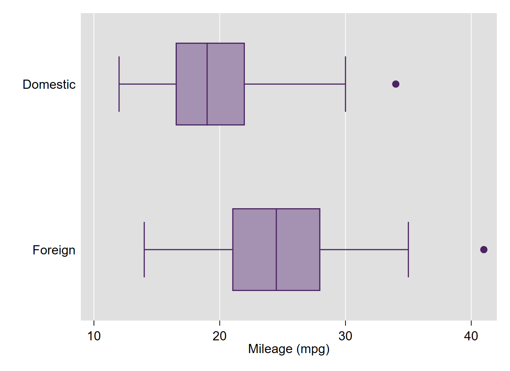

Les bases de données
1 Affectation du répertoire de travail
La commande cd (Current Directory), permet d’indiquer le chemin d’accès du répertoire où se trouve la base à ouvrir ou à enregistrer. Si aucun chemin d’accès n’est spécifié, Stata ira chercher la base dans le répertoire par défaut (normalement C: ou D:).
Syntaxe
Syntaxe
cd "path"Remarque
Avec cette commande, un seul repertoire de travail est actif. On peut élargir les possibilités en affectant des répertoires avec des macros variables locales ou globales
2 Ouverture d’une base
Commande use
Sans chargement d’un répertoire
Syntaxe
use "path/nom_base.dta" [,clear]L’option clear permet d’effacer une base en cours d’utilisation. Il est conseillé de mettre cette option systématiquement. On peut également utiliser clear comme instruction avant d’ouvrir une base. on ne supprime pas la base du répertoire (commande erase), elle est juste écrasée dans la session.
Syntaxe avec affectation d’un répertoire:
Syntaxe
cd "path"
use "nom_base.dta", clear ou
Syntaxe
cd "path"
clear
use "nom_base.dta" Remarque: pour les bases d’exemples préinstallées, on utilise la commande sysuse. Dans les fichiers d’aide, des exemples font également appels a des bases localisées sur des serveurs qui s’ouvrent avec la commande webuse.
Syntaxe
sysuse auto, clearDans un premier temps, comme pour cd il faut charger le répertoire où se trouve localisé la base, avec la commande webuse set. Par exemple sur mon dépôt git, une base d’exemple (logement.dta) pour une commande se trouve à cette adresse: https://github.com/mthevenin/stata_graphiques/tree/main/programmation/gjoint
Pour charger ce répertoire à distance:
webuse set "https://raw.githubusercontent.com//mthevenin/stata_graphiques/master/ressources/gjoint"On remarque que le chemin n’est pas identique au simple lien (spécificité des dépôt de type git).
Il suffit ensuite de charger la base avec webuse
webuse logement.dta, clear
desOn revient au dépôt officiel de stata avec webuse set
webuse logement.dta, clearEn résumé avec un seul bloc d’instructions:
webuse set "https://raw.githubusercontent.com//mthevenin/stata_graphiques/master/ressources/gjoint"
webuse "logement.dta", clear
webuse set> ster/ressources/gjoint"
(prefix now "https://raw.githubusercontent.com//mthevenin/stata_graphiques/mast
> er/ressources/gjoint")
(prefix now "https://www.stata-press.com/data/r17")3 Sauvegarde d’une base
Commandes save ou saveold
Syntaxe
save "path/nom_base.dta" [, replace] L’option replace permet d’écraser une version antérieure de la base. Obligatoire à partir de la 2ème sauvegarde, mais on peut l’utiliser dès la première sauvegarde (un message d’avertissement s’affiche).
saveold permettra d’ouvrir une bases avec une version ancienne de Stata non compatibles avec la version courante. Cela commence à devenir moins critique, mais avec save il ne sera plus possible d’ouvrir une base avec une version inférieure à la 13 ou inférieur à la 13 (passage à l’encodage Utf8 avec la version 14).
Syntaxe
saveold "path/nom_base.dta", [replace] [version(#)] // # = numéro de la version de Stata: Remarques:
- Ecrire l’extension .dta n’est pas obligatoire
- Les doubles quotes ne sont obligatoires que si il y a un espace dans le chemin d’accès et/ou dans le nom de la base
use "ma base", clear
save ma_base, clear 4 Décrire le contenu d’une base
Commande describe
Syntaxe
describe [varlist , short]- La commande est régulièrement tronquée jusqu’à
des
Exemple
sysuse auto.dta
des
Contains data from C:\Program Files\Stata16\ado\base/a/auto.dta
obs: 74 1978 Automobile Data
vars: 12 13 Apr 2018 17:45
(_dta has notes)
-------------------------------------------------------------------------------------------------------------
storage display value
variable name type format label variable label
-------------------------------------------------------------------------------------------------------------
make str18 %-18s Make and Model
price int %8.0gc Price
mpg int %8.0g Mileage (mpg)
rep78 int %8.0g Repair Record 1978
headroom float %6.1f Headroom (in.)
trunk int %8.0g Trunk space (cu. ft.)
weight int %8.0gc Weight (lbs.)
length int %8.0g Length (in.)
turn int %8.0g Turn Circle (ft.)
displacement int %8.0g Displacement (cu. in.)
gear_ratio float %6.2f Gear Ratio
foreign byte %8.0g origin Car type
-------------------------------------------------------------------------------------------------------------
5 Affichage de la base dans l’output
Commande list
Syntaxe
list [varlist] [expression]Exemple
sysuse auto.dta, clear
. list price mpg turn foreign in 1/10
+--------------------------------+
| price mpg turn foreign |
|--------------------------------|
1. | 4,099 22 40 Domestic |
2. | 4,749 17 40 Domestic |
3. | 3,799 22 35 Domestic |
4. | 4,816 20 40 Domestic |
5. | 7,827 15 43 Domestic |
|--------------------------------|
6. | 5,788 18 43 Domestic |
7. | 4,453 26 34 Domestic |
8. | 5,189 20 42 Domestic |
9. | 10,372 16 43 Domestic |
10. | 4,082 19 42 Domestic |
+--------------------------------+6 Autres commandes
labelbook et label list
Commande labelbook: affiche les informations sur les labels affectés aux modalités des variables. Peu utilisé.
Syntaxe
labelbook [varlist]On peut également utiliser la commande label list [nom_label] si on connait le nom du label. Le nom du label peut-être récupéré dans describe ou dans le fenêtre properties (voir plus loin également dans le variable manager)
Exemple
labelbook
-------------------------------------------------------------------------------------------------------------
value label origin
-------------------------------------------------------------------------------------------------------------
values labels
range: [0,1] string length: [7,8]
N: 2 unique at full length: yes
gaps: no unique at length 12: yes
missing .*: 0 null string: no
leading/trailing blanks: no
numeric -> numeric: no
definition
0 Domestic
1 Foreign
variables: foreign
label list origin
origin:
0 Domestic
1 Foreign7 Description statistique des variables
Dans les menus de l’interface principale: Statistics => Summaries, tables & tests
7.1 Variables continues
Commande summarize
Avec l’option detail (d) on obtient la moyenne, la variance, les quantiles, la symétrie…). La commande peut-être tronquée jusqu’? sum (warning: il existe également une fonction sum pour générer des cumuls lors d’une cr”ation de variable).
Syntaxe
summarize varlist [, detail]A voir également: les commandes mean ou tabstat. Egalement la commande table permet de calculer des quantités de type moyenne, médiane, variance…. pour les différentes valeurs d’une variable catégorielle (j’avoue ne jamais l’avoir utilisé).
Exemples
sum price length, d
Price
-------------------------------------------------------------
Percentiles Smallest
1% 3291 3291
5% 3748 3299
10% 3895 3667 Obs 74
25% 4195 3748 Sum of Wgt. 74
50% 5006.5 Mean 6165.257
Largest Std. Dev. 2949.496
75% 6342 13466
90% 11385 13594 Variance 8699526
95% 13466 14500 Skewness 1.653434
99% 15906 15906 Kurtosis 4.819188
Length (in.)
-------------------------------------------------------------
Percentiles Smallest
1% 142 142
5% 154 147
10% 157 149 Obs 74
25% 170 154 Sum of Wgt. 74
50% 192.5 Mean 187.9324
Largest Std. Dev. 22.26634
75% 204 221
90% 218 222 Variance 495.7899
95% 221 230 Skewness -.0409746
99% 233 233 Kurtosis 2.04156
bysort foreign: sum price, d
-------------------------------------------------------------------------------------------------------------
-> foreign = Domestic
Price
-------------------------------------------------------------
Percentiles Smallest
1% 3291 3291
5% 3667 3299
10% 3955 3667 Obs 52
25% 4184 3799 Sum of Wgt. 52
50% 4782.5 Mean 6072.423
Largest Std. Dev. 3097.104
75% 6234 13466
90% 11385 13594 Variance 9592055
95% 13594 14500 Skewness 1.777939
99% 15906 15906 Kurtosis 5.090316
-------------------------------------------------------------------------------------------------------------
-> foreign = Foreign
Price
-------------------------------------------------------------
Percentiles Smallest
1% 3748 3748
5% 3798 3798
10% 3895 3895 Obs 22
25% 4499 3995 Sum of Wgt. 22
50% 5759 Mean 6384.682
Largest Std. Dev. 2621.915
75% 7140 9690
90% 9735 9735 Variance 6874439
95% 11995 11995 Skewness 1.215236
99% 12990 12990 Kurtosis 3.555178Pour aller plus loin
En bas de l’aide d’une commande, stored result indique les informations enregistrées temporairement.
Pour la commande summarize:
summarize stores the following in r():
Scalars
r(N) number of observations
r(mean) mean
r(skewness) skewness (detail only)
r(min) minimum
r(max) maximum
r(sum_w) sum of the weights
r(p1) 1st percentile (detail only)
r(p5) 5th percentile (detail only)
r(p10) 10th percentile (detail only)
r(p25) 25th percentile (detail only)
r(p50) 50th percentile (detail only)
r(p75) 75th percentile (detail only)
r(p90) 90th percentile (detail only)
r(p95) 95th percentile (detail only)
r(p99) 99th percentile (detail only)
r(Var) variance
r(kurtosis) kurtosis (detail only)
r(sum) sum of variable
r(sd) standard deviation
On peut afficher ces informations avec la commande return list (ereturn list pour les estimations de modèles)
qui sum price, d
return list
scalars:
r(N) = 74
r(sum_w) = 74
r(mean) = 6165.256756756757
r(Var) = 8699525.97426879
r(sd) = 2949.495884768919
r(skewness) = 1.653433511704859
r(kurtosis) = 4.819187528464004
r(sum) = 456229
r(min) = 3291
r(max) = 15906
r(p1) = 3291
r(p5) = 3748
r(p10) = 3895
r(p25) = 4195
r(p50) = 5006.5
r(p75) = 6342
r(p90) = 11385
r(p95) = 13466
r(p99) = 15906
Si l’on souhaite afficher seulement les valeurs de la médiane pour plusieurs variables de la base:
local x price mpg rep78 headroom trunk
foreach i of local x {
qui sum `i', d
di as text "la valeur de la médiane de la variable `i' est:" as result `r(p50)'
}
La valeur de la médiane de la variable price est:5006.5
La valeur de la médiane de la variable mpg est:20
La valeur de la médiane de la variable rep78 est:3
La valeur de la médiane de la variable headroom est:3
La valeur de la médiane de la variable trunk est:14- Ici r(p50) joue le rôle d’une macro, ici de type scalaire
- Ces informations sont utilisables lorsqu’on créer des variables
Graphiques
Commandes boxplot et histogram
Par les menus: Graphics => Distributional graphs
Syntaxe
* Boxplot
graph box varlist [, over(var)...]
* Histogramme
histogram varname [, by(var)...]histogram length, by(foreign)
graph box length, over(foreign) {kind=link}
Les graphiques de type violin qui réunie les informations issues des boxplots et histogrammes ne sont pas implémentés dans Stata (possible via Python à partir de la v16 de Stata).
Bien évidemment, d’autres types de graphiques sont possibles, en particulier via des commandes externes. Pour analyses des distributions de deux variables continues, on se reportera par exemple à la commande heatplot de Ben Jann.
Exemples 
{kind=link}
7.2 Variables catégorielles
La principale commande est tabulate (tab)
Syntaxe (tableau croisé)
tab var1 var2 [, mis nofreq row col chi2 ......]tab rep78 foreign, mis
Repair |
Record | Origine voiture
1978 | Domestic Foreign | Total
-----------+----------------------+----------
1 | 2 0 | 2
2 | 8 0 | 8
3 | 27 3 | 30
4 | 9 9 | 18
5 | 2 9 | 11
. | 4 1 | 5
-----------+----------------------+----------
Total | 52 22 | 74
tab rep78 foreign, nofreq col
Repair |
Record | Origine voiture
1978 | Domestic Foreign | Total
-----------+----------------------+----------
1 | 4.17 0.00 | 2.90
2 | 16.67 0.00 | 11.59
3 | 56.25 14.29 | 43.48
4 | 18.75 42.86 | 26.09
5 | 4.17 42.86 | 15.94
-----------+----------------------+----------
Total | 100.00 100.00 | 100.00
- On peut également utiliser la commande
tablepour afficher des effectifs croisés - La commande externe
tab3waypermet d’afficher des tables pour 3 variables catégorielles - Une option interessante est
nolabel. Si une variable catégorielle a des labels sur les modalités, le tableau ne les affiche pas
tab rep78 foreign, nofreq col nolab
Repair |
Record | Origine voiture
1978 | 0 1 | Total
-----------+----------------------+----------
1 | 4.17 0.00 | 2.90
2 | 16.67 0.00 | 11.59
3 | 56.25 14.29 | 43.48
4 | 18.75 42.86 | 26.09
5 | 4.17 42.86 | 15.94
-----------+----------------------+----------
Total | 100.00 100.00 | 100.00
Graphiques
On privilégiera des commandes externes, en particulier celles de NJ.Cox catplot et spineplot
ssc install catplot
* tableau: tab rep78 foreign, nofreq col
catplot rep78, by(foreign) percent(foreign)
* tableau: tab rep78 foreign, nofreq row
catplot rep78, by(foreign) percent(foreign)
spineplot foreign rep78
ssc install spineplot
spineplot foreign rep78{kind=link}
8 La boîte à outils
8.1 Tri d’une base
Commande sort
sort varlist- La commande
sortn’effectue que des tris croissants. Pour faire un tri décroissant, on peut utiliser la commande externegsort - Le tri d’une peut (voire doit) être effectué lorsqu’on veut répéter une instruction avec le préfixe
bysort:bysort varlist: instruction. Il est également obligatoire lorsqu’on veut apparié des bases
8.2 Repérage et suppression des doublons
Repérage des doublons
Commande duplicates tag
Syntaxe
duplicates tag [varlist], gen(var)Si varlist n’est pas renseigné, l’analyse des réplications se fait sur toutes les variables de la base. La variable créée (gen(var)) compte le nombre de doublons.
Commande duplicates drop
Syntaxe
duplicates drop [varlist]8.3 Modifier la place des variables dans la base
Commande order
order varlist, [first/last] [after/before(varname)]Exemple
order foreign, first
order price, last
order foreign, after(rep78)8.4 Importation/Exportation
Excel et fichiers textes (.txt, .csv)
- Le plus simple est passer parle menu: fichiers => Import ou Export
- Pour excel les commandes sont
import exceletexport excel - Pour des fichiers textes type csv (R), les commandes sont
import delimitedetexport delimited
SAS
- Depuis la dernière version de Stata (16), il est possible d’importer directement des formats
sas7bdat. Pas d’exportation possible. - Pour les versions antérieure, la solution install?e via sasxport n’est pas terrible, la solution est d’utiliser le package externe
savasas- Sas => Stata (importation): commande
usesas
- Stata => Sas (exportation) : commande
savasas - Il faut diter un .do file dont le lien est donn? dans l’aide si le bon chemin d’accès à SAS Windows n’est pas spécifié . Demander à MT si problème. Avec
savasas, on peut créer un catalogue de format (en dur) avec l’option format.
- A l’Ined, si on ne dispose de Stata et Sas sur son poste, la solution Linux fonctionne sur le serveur Margaux.
- Sas => Stata (importation): commande
SPSS
- Depuis la dernière version de Stata (16), il est possible d’importer directement des bases en format spss
- Pas de possibilité d’exportation